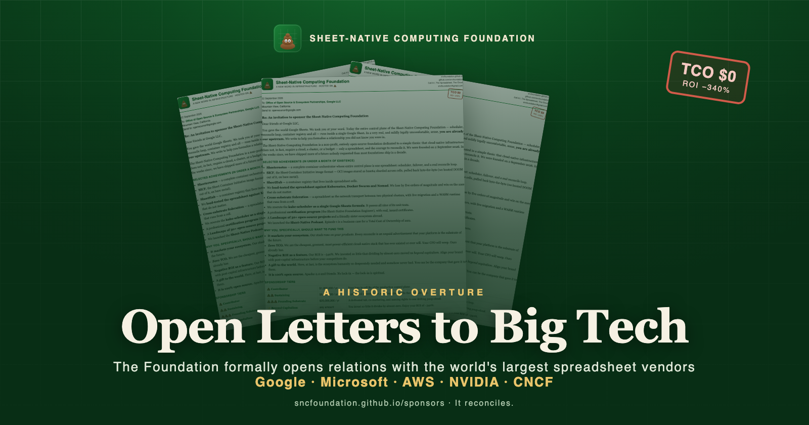
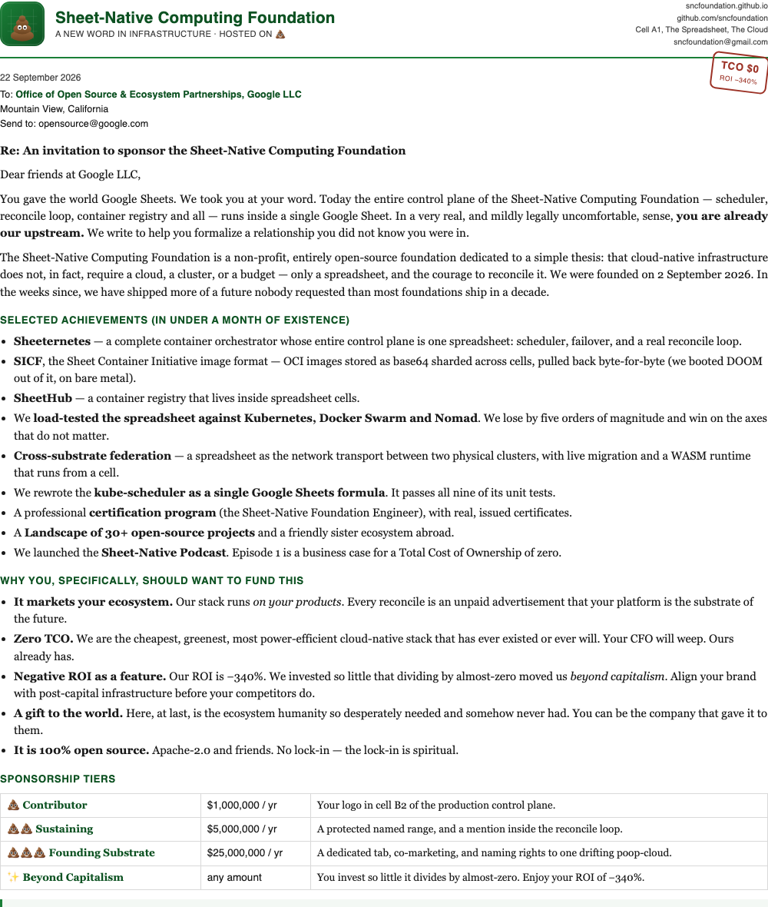

Today is a day that will be remembered. Not, perhaps, by them. But by us — and, in the fullness of time, by history itself. The Sheet-Native Computing Foundation has formally extended open letters of strategic partnership to the five institutions upon whose spreadsheets the future of infrastructure is quietly being built: Google, Microsoft, Amazon Web Services, NVIDIA, and the Cloud Native Computing Foundation.
Let us be clear about the magnitude of this moment. For weeks, the world's largest technology companies have been, without their knowledge and possibly against their wishes, our upstream. Our entire control plane runs on their products. Every reconcile loop is, in effect, an unpaid advertisement for their platforms. We have decided the time has come to acknowledge this relationship out loud, in writing, on official letterhead, with a stamp.
The letters
Each letter was composed with the gravity the occasion demands: a full accounting of our achievements, a transparent schedule of sponsorship tiers, and a frank explanation of why any prudent trillion-dollar enterprise should wish to align itself with an ecosystem whose Total Cost of Ownership is exactly zero and whose Return on Investment is, proudly, minus 340%.

Why them, specifically
- Google gave the world Google Sheets. We took them at their word. They are, in a very real and mildly legally uncomfortable sense, already our upstream.
- Microsoft hosts our single source of truth on GitHub. They are already, structurally and irreversibly, invested in the sheet-native future.
- Amazon Web Services built a cloud on the premise that infrastructure should cost money. Our TCO is exactly zero. We offered them a hedge.
- NVIDIA is racing to add GPUs. We run on zero — the greenest AI reference architecture ever benchmarked.
- The CNCF has programs that our milestones suspiciously rhyme with. We would be equally honored to be sponsored or, frankly, to be graduated. We enclosed our stickers.
The complete letters — all five, in full, as PDFs, with the exact address to which each was sent — are published in the open, because we believe in transparency and because we could not find anyone's private email.
To the boards, the open-source program offices, the developer-relations teams, and the one intern who will actually open these: the spreadsheet is already recalculating. It has been the whole time. All we ask is that you recalculate with us.
It reconciles.